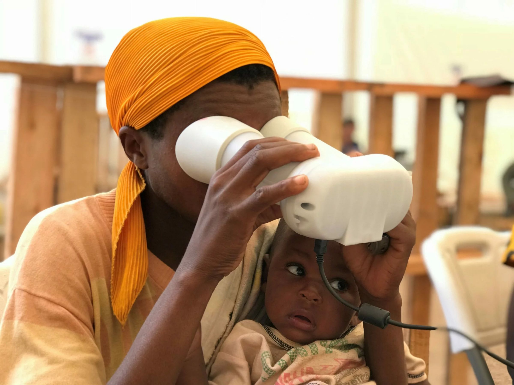

Biometrics in the humanitarian sector
With the recent technological progress, the applications and equipment for biometric identity management are getting more affordable and easier to deploy. These improvements allow organisations that need fast and reliable people identification to use biometric ID systems. Among these organisations are humanitarian and non-government, which have used this technology in different scenarios since the early 2000s.
Humanitarians are using biometric technology in different scenarios worldwide, including:
- Food assistance
- Cash assistance
- Refugee identity management
- Medical help
- Migration management.
Among biometric identification users are the United Nations Refugee Agency (UNHCR), the United Nations World Food Programme (WFP), International Committee of the Red Cross, and the others.

Benefits
Stakeholders and organisations align on the reasons for and benefits of integrating biometrics into development and humanitarian assistance programmes: these include that biometrics help to identify the people targeted for assistance (identifiability and traceability), reduce fraud and duplication (accuracy and integrity), and simplify registration and identification (simplicity and efficacy).
WFP and UNHCR report increased efficiency in its operations after investing in biometric identity management. For evidence of the value for the investment, statistics indicated that within six months of the implementation of the biometrics system, the population collecting food in Kenya declined by over 20 percent. It happened mainly due to the system's design capability to cross-reference food collectors' biometric images against UNHCR's refugee registration database. The biometrics system effectively ensures better targeting of beneficiaries so that food is only distributed to the intended beneficiaries, thereby reducing fraud, abuse, and food diversion. As a result, during the first eight months of the biometrics system, it reduced the amount of food required for the registered refugee population by over 11,000 metric tons between September 2013 and May 2014. This resulted in savings of more than USD 11.1 million (USD 1.4 million per month).
There are about 11,520,000 different individuals in contact with WFP and partner's biometric systems in 34 countries, according to WFP as of 2020.
The beneficiaries evaluate the result of these efforts positively: "I can be someone now. I am registered globally with the UN and you'll always know who I am," said 43-year-old Congolese refugee Olivier Mzaliwa, echoing the thoughts of other refugees.
Caveats
On the other side, biometrics, just like any other technology, imposes some risks and, therefore, can be a double-edged sword. The core humanitarian principle 'Do no harm' nowadays includes 'Do no digital harm', which applies explicitly to data-driven tools.
In any system that involves humans and technical components, there are human factor risks and technical risks. Some of them are related explicitly to biometrics.
Non-technical risks include:
- ethical issues
- function creep, which happens when the data is being used not for the purpose gathered
- the power imbalance between humanitarian and beneficiaries when individuals do not have a real choice whether to provide their biometric data or not
- possible pressure by various national or regional authorities (including donors) to acquire the biometric data sets collected by humanitarians, with the risk of the data usage for purposes other than strictly humanitarian purposes (e.g. law enforcement, security or border control).
Mitigation of these risks requires following the humanitarian principles, fundamental human rights and privacy laws, including the International Covenant on Civil and Political Rights and the UN Universal Declaration of Human Rights. These rights imply the right to be forgotten and the right to be invisible — in other words, the right to ensure that your information isn't stored or shared without your consent.
Handbook on data protection in humanitarian action recommends humanitarian organisations to set out the biometric data usage clearly and transparently, ideally through public policies. Biometric Institute asserts the policies importance in its three laws of biometrics: the policy comes first, the process follows policy, and technology is guided by policy and process. The collecting entity needs a lawful basis for its operations as well.
Let's take a closer look at technical risks.
Privacy
The biggest concern regarding sharing biometric data is that people cannot change their body characteristics, unlike passwords or tokens. Once such information is compromised, it's compromised forever. This poses a risk to an individual's privacy.
Therefore if it's impossible to mitigate possible harm to persons who provide their data, it should not be collected in the first place. For example, consider cards that entitle beneficiaries to assistance. Such cards, created during enrollment, may contain personal information in the form of a QR code. Beneficiaries keep the cards and provide them upon request to verify their identity, which prevents cards from being stolen, sold, or given away. This way, humanitarians do not store sensitive information.
When storing sensitive data in the database is necessary and appropriate, it needs strict protective measures based on relevant policies. Principles of data minimization and privacy by design should apply.
Best practices for data protection include:
- Proper IT and physical security of the datacenter
- Data encryption during transmission and in storage
- Storing biometric data apart from other personal data
- Data pseudonymisation or anonymisation
- Mandatory data retention period, upon expiry of which the data is deleted
- Access logs for audit and incident response
- Data breach notification procedures
With the scrupulous implementation of these practices by skilled professionals, the probability and impact of data leaks reduce to the very minimum.
Technology failure
Biometric algorithms are probabilistic, which means the system cannot provide 100% accuracy by design, even though modern biometric solutions are close to this number. Still, some biometric modalities are way more accurate than the others. Iris scans, along with retina scans and DNA identification, are considered the most accurate biometric modalities, with iris scan being the least intrusive and the most affordable one.
As shown by the inventor of iris recognition John Daugman and independent experts, the number of false positives can be as low as 1 in 200 billion, which significantly exceeds the world population. The system error rate adjusts by changing the accuracy criteria. Higher accuracy comes with a tradeoff between usability: the number of false negatives increases. It means the user might need to re-scan the eye to get the correct identification result. For finding the right balance between usability and security, it's essential to consider:
- Amount of people enrolled
- Use-case: whether it is verification (check that the identity belongs to the person who's claiming it) or identification (check the person identity against a database of known individuals)
- Hardware specifics
Analysing this, professionals can help to minimize the technology failure risks. Nevertheless, if the system is unable to verify someone's identity, the first priority is to question the technology rather than the status of the affected individual.
Spoofing
Spoofing, otherwise known as imposter attack, is not common in humanitarian activities. Firstly, because usually, there is an operator who controls the process of biometric scanning. On top of that, biometric spoofing is comparatively hard to implement technically, and there is little incentive to do that.
Still, iris recognition stands out with regards to anti-spoofing protection as well. There are software methods of liveness detection, which can distinguish fake irises from live ones and completely diminish spoofing risks.
What this means for tools
Most of the risks above are decided by how the system is built, not by the choice of biometric. Three properties help the most. Templates instead of images, so a leaked database cannot be turned back into pictures of people. Standard template formats, so an organisation can change its supplier or share a de-duplication check with a partner agency without handing over raw data. And offline operation, so registration does not stop when the connection does.
These are the principles behind our own components: an open-source Biometric SDK that matches on the device, an Edge service for iris scanners that keeps an encrypted local database and syncs when it can, and a converter between ISO and ANSI fingerprint templates.
Conclusion
Biometrics has its risks and caveats, just like any other technology. Knowing them and taking appropriate countermeasures leads to the effective usage of biometric technology with all its benefits and diminishes threats to human privacy and dignity. Working with experts in biometric and data security is the key.
References
- insight.wfp.org — These changes show that WFP loves us
- IOM uses biometrics to aid displaced in DR Congo
- UNHCR document 66556
- UNHCR — Biometric Identity Management System
- UNHCR 52dfa8f79
- Gavi, NEC and Simprints — child fingerprint identification
- IOM — Biometrics
- The Engine Room / Oxfam — Biometrics Review (PDF)
- WFP report 277842 (PDF)
- Biometrics Institute — The three laws of biometrics
- Daugman — UCAM-CL-TR-635 (PDF)